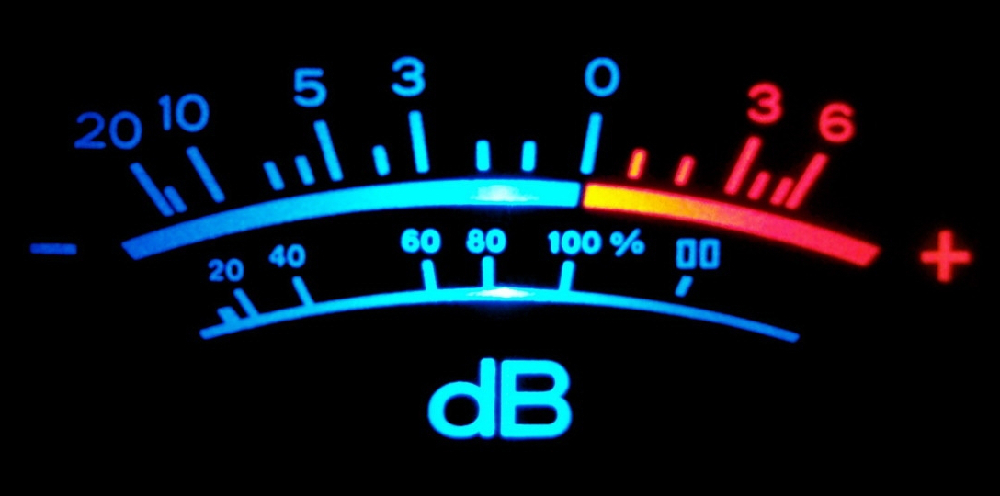

class: center, middle, inverse # Meetup Paris Audio  ## #ParisAudio --- class: inverse # Sessions - Paris Audio #1 @ Mozilla - Paris Audio #2 @ Radio France - Paris Audio #3 @ IRCAM - Paris Audio #4 @ Deezer --- class: inverse # Paris Audio #3 @ IRCAM ## Lineup - **Abdoulaye Sy** : MAO pour bootstraper la musique de vos videos de communication - **Alejandro Mantecon Guillen** : Pizzicato JS, une librairie de contrôle et d'effet web audio - **Michel Buffa** (visio) : AmpSim2, un simulateur d'amplificateur de guitare en web audio - **Benjamin Matuszewski** : Waves.js, une librairie d'interaction web audio (+ projet SoundWorks) - **Bruno Verbrugghe** : Dualo Du-Touch, un instrument de musique électronique basé sur un double clavier hexagonal inédit - **Paul Brossier** : Aubio, une librairie d'annotation audio automatique - **Xavier Bonjour** : Solutions de 3D Sound Labs et sur les évolutions de l'audio 3D binaurale - **Présentations libres** : de 30s à 5mn --- class: center, middle, inverse ### Paris Audio #3 # Abdoulaye Sy ## MAO pour bootstraper la musique de vos videos de communication --- class: center, middle, inverse ### Paris Audio #3 # Alejandro Mantecon Guillen ## Pizzicato JS, une librairie de contrôle et d'effet web audio [alemangui.github.io/pizzicato/](https://alemangui.github.io/pizzicato/) --- class: center, middle, inverse ### Paris Audio #3 # Michel Buffa ## AmpSim2, un simulateur d'amplificateur de guitare en web audio [mainline.i3s.unice.fr/AmpSim2/](https://mainline.i3s.unice.fr/AmpSim2/) --- class: center, middle, inverse ### Paris Audio #3 # Benjamin Matuszewski ## Waves.js, une librairie d'interaction web audio + projet Collective SoundWorks [github.com/wavesjs](https://github.com/wavesjs) [github.com/collective-soundworks](https://github.com/collective-soundworks) --- class: center, middle, inverse ### Paris Audio #3 # More Web Audio? [github.com/alemangui/web-audio-resources](https://github.com/alemangui/web-audio-resources) [blog.chrislowis.co.uk/waw.html](http://blog.chrislowis.co.uk/waw.html) [github.com/webaudio/](https://github.com/webaudio/) --- class: center, middle, inverse ### Paris Audio #3 # Bruno Verbrugghe ## Dualo Du-Touch, un instrument de musique électronique basé sur un double clavier hexagonal inédit [dualo.org/fr/du-touch/](https://dualo.org/fr/du-touch/) --- class: center, middle, inverse ### Paris Audio #3 # Paul Brossier ## Aubio, une librairie d'annotation audio automatique [aubio.org](http://aubio.org) --- class: center, middle, inverse ### Paris Audio #3 # Xavier Bonjour ## Solutions de 3D Sound Labs et sur les évolutions de l'audio 3D binaurale [3dsoundlabs.com](http://www.3dsoundlabs.com/) --- class: center, middle, inverse ### Paris Audio #3 # Présentations libres ## de 30s à 5mn --- class: center, middle, inverse ### Paris Audio #3 # A. Péro ## Rencontres du 3e type au 2e sous-sol ## #ParisAudio --- class: center, middle, inverse # Paris Audio #4 @ Deezer ## #ParisAudio ## WiFi : DZ-Event / MyEventDzr --- class: inverse # Paris Audio #4 @ Deezer ## Lineup - **Deezer R&D Team** : Surprise topic about Audio Digital Processing at Deezer (20mn) - **François Becker (Coronal Audio)** : Présentation du codec ARCADE (15mn) - **François Becker (Coronal Audio)** : Présentation de la technique de captation DuoMic. (5mn) - Choix des questions pour la session Q&A. (15mn) - Buffet (30 mn) - **Damien Plisson (Audirvana)** : Impact du logiciel de lecture sur la qualité sonore (30mn) - **Ivan COHEN (CEO @ Musical Entropy)** : Présentation de la nouvelle version de JUCE 5 (15mn) - Présentation du prochain #MusicHackDay @ IRCAM (5mn) - Session Q&A (30mn...) - Buffet (restes) & networking --- class: center, middle, inverse ### Paris Audio #4 # Deezer R&D Team ## Surprise topic about Audio Digital Processing at Deezer ### #ParisAudio ### WiFi : DZ-Event / MyEventDzr --- class: center, middle, inverse ### Paris Audio #4 # François Becker (Coronal Audio) ## Présentation du codec ARCADE ### #ParisAudio ### WiFi : DZ-Event / MyEventDzr --- class: center, middle, inverse ### Paris Audio #4 # François Becker (Coronal Audio) ## Présentation de la technique de captation DuoMic. ### #ParisAudio ### WiFi : DZ-Event / MyEventDzr --- class: center, middle, inverse ### Paris Audio #4 # Choix des questions pour la session Q&A ### #ParisAudio ### WiFi : DZ-Event / MyEventDzr --- class: center, middle, inverse ### Paris Audio #4 # Buffet ### #ParisAudio ### WiFi : DZ-Event / MyEventDzr --- class: center, middle, inverse ### Paris Audio #4 # Damien Plisson (Audirvana) : Impact du logiciel de lecture sur la qualité sonore ### #ParisAudio ### WiFi : DZ-Event / MyEventDzr --- class: center, middle, inverse ### Paris Audio #4 # Ivan COHEN (CEO @ Musical Entropy) : Présentation de la nouvelle version de JUCE 5 ### #ParisAudio ### WiFi : DZ-Event / MyEventDzr --- class: inverse # MusicHackDay @ IRCAM du 10 au 11 novembre 2017 (18:00 à 18:00) http://hacking2017.ircam.fr/ dans le cadre du colloque international "Musique et hacking : Instruments, communautés, éthiques", 50 hackers (software et hardware) se déchaînent à l'IRCAM pendant 24h Objectifs : - conception de nouvelles lutheries électroniques (soft + hardware) - concert d'improvisation en fin de hackday - étude des processus de création Inscriptions par le meetup Paris Audio ;) --- class: inverse # Session Q&A - latence lecture ffmpeg (Guillaume) - codec audio qui exploite la redondance temporelle (Nicolas) - évolution du TdS en HTML5 (Web) audio : tout recoder ? (piem) - système ultra-portable de prise de son (Alexandre)